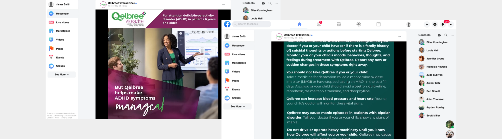
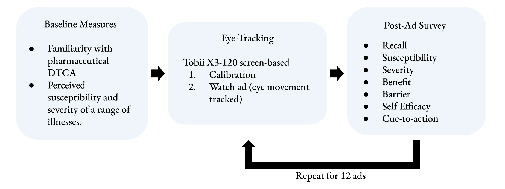
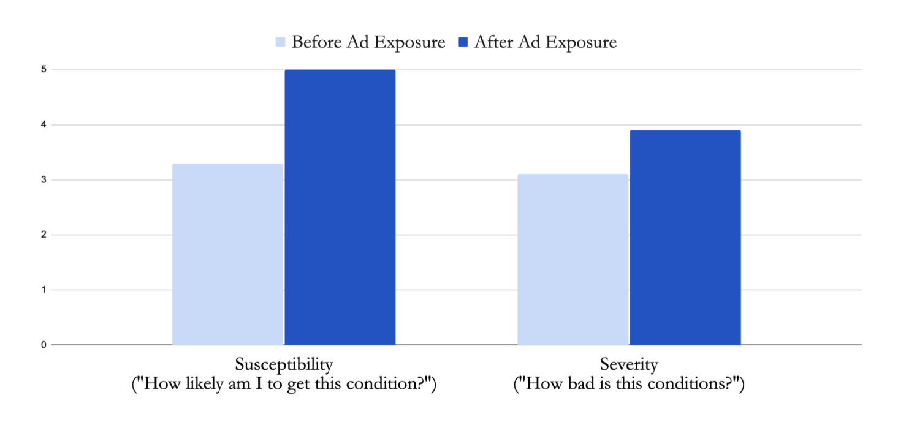
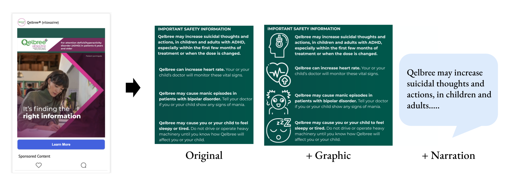
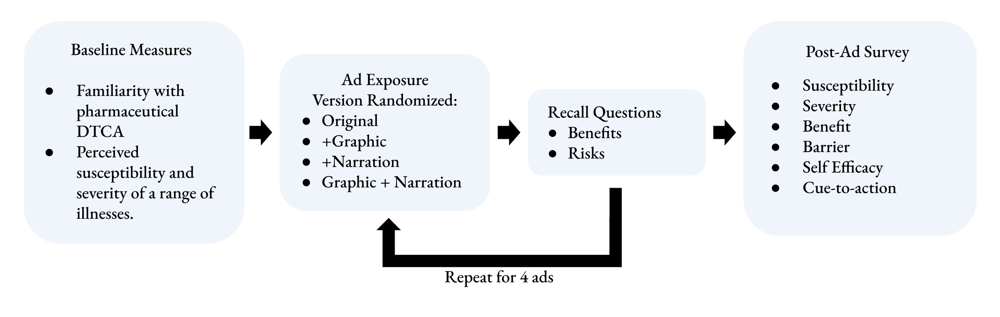
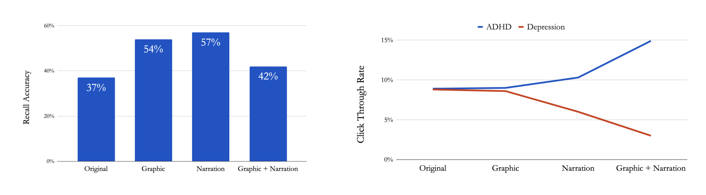

Case study
Reimagining Risk Disclosure in Social Media Pharmaceutical Advertising
Product-facing UX research translating regulatory requirements
into usable, patient-centered safety communication.

At a Glance
- Identified where regulatory-compliant designs fail real-world usability
- Translated attention and memory gaps into concrete UX risks
- Evaluated design tradeoffs between comprehension, engagement, and cognitive load
- Generated evidence to inform safer, condition-aware risk disclosure design
Problem Context
Pharmaceutical advertising on social media operates at the intersection of regulation, persuasion, and user experience. In 2014, the FDA issued guidance requiring that any benefit claim in a limited-space social media ad be accompanied by risk information that is equally clear and prominent.
In practice, most ads technically comply but functionally fail. Benefits are presented through engaging narratives and visuals, while risks are relegated to dense, scrolling safety text that appears late in the ad.
This creates a critical UX problem: Can users actually notice, process, and remember safety information well enough to make informed decisions?
This project reframes pharmaceutical risk disclosure not as a legal checkbox, but as a usability and comprehension challenge with direct implications for patient autonomy, ethical persuasion, and regulatory trust.
For product and policy teams, this gap represents a systemic UX risk: designs can meet regulatory standards while still failing user comprehension. This disconnect has downstream implications for patient trust, ethical persuasion, and long-term credibility of health communication platforms.
Research Question
Framed as a product and policy question:
How can social media pharmaceutical ads present risk information in a way that real users actually attend to, understand, and remember without increasing cognitive burden?
- Do users pay attention to risk information in current ad formats?
- How does attention map onto memory and health beliefs?
- Can UX interventions improve comprehension without changing regulated content?
Study 1: Diagnostic UX Audit
I led the user research component of a multi-institutional project by first diagnosing the problem. We conducted an in-person eye-tracking study to observe how users actually attend to benefit and risk information in real pharmaceutical ads.
Fifty participants watched a diverse set of real social media pharma ads embedded within a simulated feed. We recorded gaze behavior frame-by-frame during benefit and risk segments, then assessed recall and health belief measures immediately after each ad.
This phase functioned as a diagnostic UX audit, establishing baseline performance before proposing any design intervention. This approach allowed us to connect what users looked at with what they remembered and how they felt.
Methods & Measures
- Method: In-lab eye tracking
- Sample: 50 adult participants
- Stimuli: Real pharmaceutical social media ads across conditions
- Measures: Gaze allocation, recall accuracy, health belief constructs (severity, susceptibility, self-efficacy, cue to action)
- Goal: Identify breakdowns in attention and comprehension

This mixed-methods approach allowed us to triangulate behavioral data, self-report measures, and downstream decision signals, mirroring how product teams evaluate UX effectiveness at scale.
Key UX Findings
1. Risk information is remembered at half the rate of benefits
When collapsing across ads, participants recalled benefits with ~64% accuracy. Risk recall, however, averaged only ~33%.
Despite regulatory requirements for balance, users walked away with a highly asymmetric understanding of benefits versus risks. From a product perspective, this represents a comprehension gap large enough to undermine the intent of balanced risk-benefit communication.
2. Attention collapses during scrolling safety text
Eye-tracking data showed that as soon as the risk segment began, visual attention scattered. Participants looked at UI chrome, unrelated visuals, and feed elements, anywhere but the scrolling safety text. In UX terms, the scrolling safety text functions as a low-salience, high-cost information channel that users actively disengage from.
3. Ads increase urgency even when risks are not retained

Exposure increased perceived severity and susceptibility (key predictors of intent to consult a doctor) even when risk memory was poor.
This raised a critical concern: urgency was increasing without corresponding understanding.
Study 2: UX Redesign Experiment
Based on the diagnostic findings, I led the redesign phase focused on improving risk comprehension through interface-level interventions without altering regulated text.
This phase reframed risk disclosure as a design experimentation problem, testing how alternative information architectures perform under real attentional constraints.
I introduced two design layers:
- Graphic layer: Simple icons representing key side effects
- Audio narration: Spoken delivery of the exact risk text
These interventions were fully crossed, producing four ad variants: original, graphic-only, narration-only, and graphic + narration.

Experimental Implementation
- Platform: Qualtrics with custom GitHub-hosted prototype
- Sample: 200 participants (50 per condition)
- Stimuli: Real ads sourced from Meta Ad Library,
Feed-based prototype mimicking real social media interaction for ecological validity - Telemetry: CTA clicks, hover behavior, UI interaction
- Design: Between-subjects, randomized exposure

Key Experimental Insights

1. Single-channel cues outperform layered designs
Both graphic and narration interventions significantly improved risk recall (up to ~57%), compared to the control (~37%).
Surprisingly, combining both cues performed worse than either alone, suggesting cognitive overload when multiple channels compete. This highlights a critical UX tradeoff: adding information can improve recall up to a point, after which cognitive load erodes effectiveness.
2. UX effectiveness varies by condition context
Telemetry revealed divergent click behavior across drug categories. For ADHD medications, added risk cues reduced engagement. For depression medications, the same cues increased engagement.
These findings suggest that risk disclosure UX must be condition-aware rather than universally standardized.
Interpretation
Compliance alone does not guarantee comprehension. Risk disclosures fail when they are treated as legal artifacts rather than user-facing information systems.
Effective risk communication depends on attentional bandwidth, emotional context, and cognitive load, not just visibility.
Product & Policy Implications
- Treat risk disclosures as first-class UX components
- Prioritize clarity over redundancy in safety communication
- Design condition-aware risk presentation strategies
- Evaluate comprehension, not just exposure metrics
- Integrate usability testing into regulatory compliance workflows
Why This Matters
Social media pharmaceutical ads shape health decisions for millions of users. If safety information is not usable, compliance becomes performative rather than protective.
This project demonstrates how UX research can bridge regulation, ethics, and real-world decision-making by ensuring that critical information is not just present, but understood. For organizations operating in regulated spaces, this work illustrates how UX research can reduce ethical risk, improve decision quality, and strengthen long-term user trust without compromising compliance.